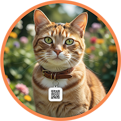

🐾 Cadastrar um PET Encontrado
Você encontrou um animalzinho perdido? Cadastre-o aqui com fotos, localização e informações de contato.
Cadastrar Agora🔍 Procurar um PET Perdido
Seu companheiro se perdeu? Consulte nossa lista de pets encontrados e use os filtros para refinar sua busca.
Consultar ListaComo proteger seu PET?
Vá a uma “Empresa Amiga dos Animais” em sua cidade e solicite um QR-Code identificador para colocar na coleira de seu amigo.
Sua contrapartida será a doação de ração para nosso projeto que alimenta e trata animais de rua.


Quem AMA protege!